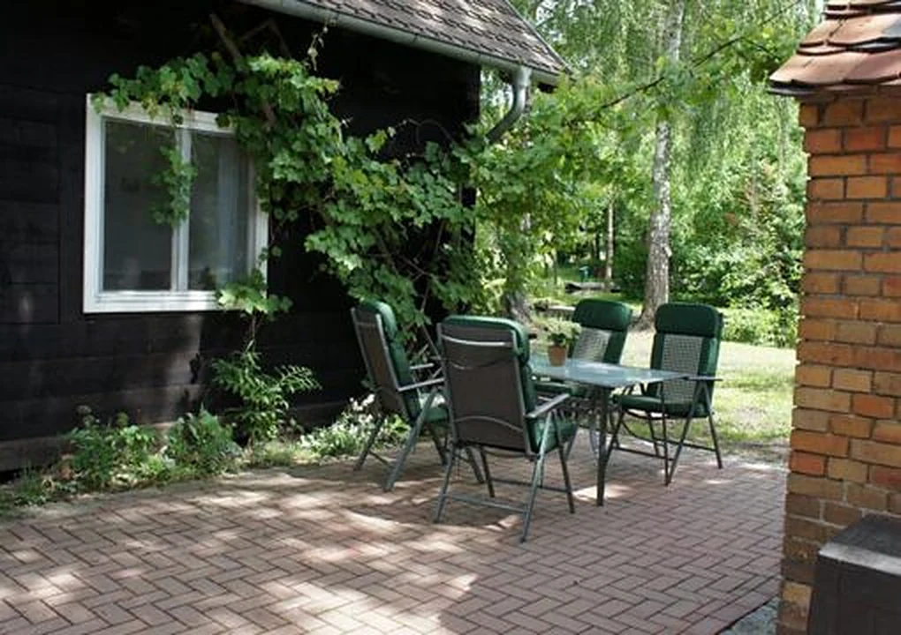

Ferienwohnungen · Lehde
Unsere beiden Ferienwohnungen
In unserem 1904 erbauten, denkmalgeschützen Blockbohlenhaus stehen zwei liebevoll eingerichtete Ferienwohnungen für Sie bereit. Beide Appartements haben zwei Zimmer mit einem Blick auf die Wasserlandschaft, eine geräumige neue Küche und ein modernes Bad. Sie sind 2016 komplett saniert und zeitgemäß ausgestattet worden. Sie wohnen hier in modernem Komfort und einer sehr gemütlichen Atmosphäre.

Das Haus
Urlaub in einem alten Blockhaus
Durch die Holzwände, die Lehmdämmung und den traditionellen doppelten Holzfenstern bleiben die Zimmer in heißen Sommertagen angenehm kühl und in den kalten Herbst- und Wintermonaten schnell kuschlig warm.
Für kalte Abende steht Ihnen, neben einer Zentralheizung, sogar ein molliger Kachel-Umluft-Ofen zur Verfügung, den Sie nach kurzer Anleitung selbst mit Holz beheizen. Hier werden sie auch bei ungemütlicherem Wetter in wunderbar romantischer Atmosphäre entspannen.
Die Ferienwohnungen sind ebenerdig und auch ideal für Familien mit Kindern geeignet. Auf der angrenzenden Wiese darf nach Herzenslust gespielt und getobt werden. Sie sind umgeben von Wasser und alten Bäumen und haben Zugang zu unserem großen Naturgarten – ein besonderer Ort der Erholung und Inspiration. Genießen Sie den fantasievoll gestalteten Hof auf den Bänken, den Sitzecken, dem Grillplatz mit Räucherofen oder am Lagerfeuer. Für Ihren Lieblingsplatz in der Sonne, im Schatten oder unter den Sternen stehen auch rollbare Liegen für Sie bereit.


Zwei Wohnungen
Fewo Lischka & Fewo Spreewa
Fewo Lischka Landhaus-Stil
Fewo Spreewa Rustikal


Ausstattung
Unsere Ferienwohnungen sind 2016 komplett saniert und zeitgemäß ausgestattet worden. Jede FeWo hat 2 kombinierte Wohn- / Schlafräume für 4 Personen. (auf Anfrage Aufbettung möglich)
- Küche
- komplett eingerichtete Küche mit Backofen, Herd & Kühlschrank
- Bad
- mit Dusche/WC/Fön
- Wohnbereich
- mit Couch (Schlafcouch) und Essecke mit SAT-TV, Radio, DVD Player, Bücherecke ausgestattet
- Schlafbereich
- 1 Schlafzimmer für 4 Personen
- Extras
- großer Außenbereich mit Sitzplätzen, Grillplatz
- Kinder-Hochstuhl/Reisebett
- kostenfreie Nutzung des WLAN
- 1 Parkplatz inklusive (im Ort)
- Nichtraucher
- keine Haustiere
- Ihr eigener Kahn zum Übersetzen auf das Festland (kostenfreie Nutzung)